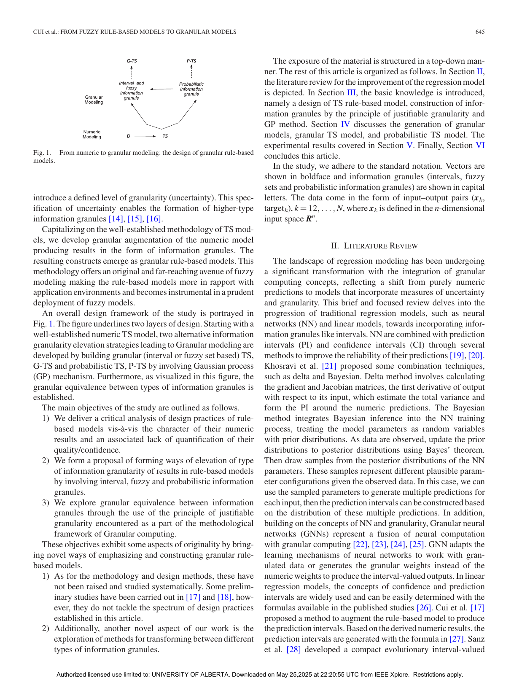

0. 名称消歧与论文来源确认
0.1 当前文档主要对应哪篇论文
当前这份文档主要对应的是：
- Cui, E, Pedrycz, Li, Wang, IEEE Transactions on Fuzzy Systems 2025, From Fuzzy Rule-Based Models to Granular Models
本文默认讨论的 Fuzzy Rule-Based -> Granular Models，都指这篇论文提出的路线：
- 先从数值型 Takagi-Sugeno 规则模型出发；
- 再把数值 consequent 提升为区间、模糊集或概率粒；
- 最终得到带可信结构的 granular rule-based model。
0.2 它在阅读路线里的位置
如果把上一篇 Granular Computing for ML 看作“为什么需要粒化表达”的总纲，那么这篇做的就是：
把“粒化输出”真正落到一个可计算、可实验的规则模型上。
换句话说：
- 上一篇更像：
granular computing -> why - 这一篇更像：
numeric TS model -> how to elevate to granular outputs
因此，这篇是 granular 主线中最适合拿来做 toy、最适合具体建模的一篇。
0.3 本文默认读者起点
下面会直接写公式，但不假设你已经熟悉：
- TS 规则模型；
- 模糊激活度；
- GP 回归；
- granule equivalence。
所以第一次出现的核心公式我都会给完整写法，而不是只给口号。
0.5 最小问题设定与记号
0.5.1 数值 TS 模型：先把 baseline 写完整
设输入输出数据为 $$ \mathcal D=\{(x_k,\operatorname{target}_k)\}_{k=1}^N, \qquad x_k\in\mathbb R^n. $$
传统常值 consequent 的 TS 规则写成 $$ \text{Rule }i:\quad \text{If }x\text{ is }A_i,\ \text{then }y_i=b_i, \qquad i=1,\dots,c. $$
这里：
- $A_i$ 是第 $i$ 条规则的前件模糊集合；
- $b_i$ 是第 $i$ 条规则的数值 consequent；
- $c$ 是规则数。
若第 $i$ 条规则在输入 $x$ 上的原始激活强度记为 $$ w_i(x), $$ 最常见的一种写法是 $$ w_i(x)=\prod_{d=1}^n \mu_{A_{id}}(x^{(d)}), $$ 其中：
- $x^{(d)}$ 是输入向量的第 $d$ 维；
- $\mu_{A_{id}}$ 是第 $i$ 条规则、第 $d$ 个前件的隶属函数。
把它归一化后得到 $$ \bar w_i(x)=\frac{w_i(x)}{\sum_{r=1}^c w_r(x)}. $$
为了后文简洁，本文把归一化激活度记成 $$ A_i(x):=\bar w_i(x). $$
于是最标准的数值 TS 输出写成 $$ \hat y(x)=\sum_{i=1}^c A_i(x)b_i. $$
这一步一定要看清：
后面所有 granular 升级，都是在这个数值 baseline 上做的，而不是凭空换模型。
0.5.2 从数值 consequent 到 granular consequent
这篇论文的核心就是把 $$ b_i $$ 升级成信息粒 $$ B_i. $$
于是规则变成 $$ \text{Rule }i:\quad \text{If }x\text{ is }A_i,\ \text{then }y_i=B_i, \qquad i=1,\dots,c. $$
此时：
- 若 $B_i=[\ell b_i,u b_i]$，则 consequent 是区间；
- 若 $B_i$ 是三角模糊集，则 consequent 是模糊粒；
- 若输出来自 GP，则可以先得到概率粒，再转区间或模糊集。
也就是说，这篇论文改造的不是“规则前件”，而主要是“规则结论的类型”。
0.5.3 区间输出怎样聚合
若 consequent 是区间 $$ B_i=[\ell b_i,u b_i], $$ 则对样本 $x_k$，聚合后的区间输出定义为 $$ Y_k=\sum_{i=1}^c A_i(x_k)B_i = \sum_{i=1}^c A_i(x_k)[\ell b_i,u b_i]. $$
也就是 $$ Y_k=[y_k^L,y_k^R], $$ 其中 $$ y_k^L=\sum_{i=1}^c A_i(x_k)\ell b_i, \qquad y_k^R=\sum_{i=1}^c A_i(x_k)u b_i. $$
这个公式很重要，因为它说明：
- 原来聚合的是标量 $b_i$；
- 现在聚合的是每条规则的上下界。
0.5.4 三角模糊 consequent 怎样写
若第 $i$ 条 consequent 是三角模糊集，记为 $$ B_i=T_i(y;\ell b_i,b_i,u b_i), $$ 它的隶属函数可写成 $$ T_i(y) = \max\left( 0, \min\left\{ \frac{y-\ell b_i}{b_i-\ell b_i}, \frac{u b_i-y}{u b_i-b_i} \right\} \right). $$
聚合后，对样本 $x_k$ 的三角模糊输出仍可用三元组表示： $$ Y_k=T(y;y_k^L,y_k^M,y_k^R), $$ 其中 $$ y_k^L=\sum_{i=1}^c A_i(x_k)\ell b_i, \qquad y_k^M=\sum_{i=1}^c A_i(x_k)b_i, \qquad y_k^R=\sum_{i=1}^c A_i(x_k)u b_i. $$
0.5.5 consequent granule 怎么构造
对第 $i$ 条规则，作者把样本目标值按照规则激活度加权，形成 $$ (\operatorname{target}_k,\omega_k), \qquad \omega_k=A_i(x_k). $$
然后用 principle of justifiable granularity 在这些加权数据上构造 $B_i$。
如果 consequent 用区间表示，那么 lower bound 和 upper bound 可以理解成分别独立优化。
例如，对下界 $\ell$，可以写一个最小版本：
$$
\operatorname{cov}_i^{L}(\ell)
=
\frac{1}{N}
\sum_{k:\ \ell\le \operatorname{target}_k\le b_i}\omega_k,
$$
以及
$$
\operatorname{sp}_i^{L}(\ell)
=
1-\frac{b_i-\ell}{r_i^L},
$$
其中
$$
r_i^L
=
b_i-\min\{\operatorname{target}_k:\omega_k>0\}.
$$
于是下界通过
$$
\ell b_i
=
\arg\max_{\ell\le b_i}
\operatorname{cov}_i^{L}(\ell)\operatorname{sp}_i^{L}(\ell)
$$
来确定。
对上界 $u$ 同理。先写 $$ \operatorname{cov}_i^{U}(u) = \frac{1}{N} \sum_{k:\ b_i\le \operatorname{target}_k\le u}\omega_k, $$ 以及 $$ \operatorname{sp}_i^{U}(u) = 1-\frac{u-b_i}{r_i^U}, $$ 其中 $$ r_i^U = \max\{\operatorname{target}_k:\omega_k>0\}-b_i. $$ 然后 $$ u b_i = \arg\max_{u\ge b_i} \operatorname{cov}_i^{U}(u)\operatorname{sp}_i^{U}(u) $$ 得到上界。
所以每条规则的 granular consequent 都不是拍脑袋设定的，而是通过：
- coverage；
- specificity；
- 二者乘积 $$ V=\operatorname{cov}\cdot\operatorname{sp} $$
来决定宽度与形状。
0.5.6 GP 分支扮演什么角色
作者还给出另一条概率粒化路径。
先把 prototype 对 $$ (v_i,b_i),\qquad i=1,\dots,c $$ 看作观测点，再由 GP 输出 $$ Y\mid x \sim \mathcal N(m(x),\sigma(x)^2). $$
更具体地， $$ m(x_\ast)=k(x_\ast,X)K^{-1}b, $$ 以及 $$ \sigma^2(x_\ast)=k(x_\ast,x_\ast)-k(x_\ast,X)K^{-1}k(X,x_\ast), $$ 其中：
- $X=(v_1,\dots,v_c)$；
- $b=(b_1,\dots,b_c)^\top$；
- $K=[k(v_i,v_j)]_{i,j=1}^c$。
这相当于先得到概率信息粒，再借助 justifiable granularity 把它转换成：
- 区间粒；
- 三角模糊粒。
论文中给出了一个很实用的换算结果：
- interval 粒的最优 spread 约为 $$ d=1.15715\,\sigma; $$
- triangular fuzzy 粒的最优 spread 约为 $$ d=1.64395\,\sigma. $$
0.5.7 granular equivalence 是什么
这篇论文还有一个关键概念：granular equivalence。
它的最小表达式可以写成 $$ \operatorname{cov}(A)\operatorname{sp}(A) = \operatorname{cov}(B)\operatorname{sp}(B). $$
意思是：如果两个不同 formalism 的信息粒 $A,B$ 在“覆盖 + 特异性”的意义下等价，那么它们可以被看成表达了近似同样的语义。
例如：
- interval 可以转 triangular fuzzy set；
- Gaussian probabilistic granule 也可以转 interval / fuzzy granule。
0.5.8 一个 1D 最小例子
假设只有两条规则： $$ \text{Rule 1: If }x\text{ is left, then }y_1=b_1, $$ $$ \text{Rule 2: If }x\text{ is right, then }y_2=b_2. $$
普通 TS 模型只输出 $$ \hat y(x)=A_1(x)b_1+A_2(x)b_2. $$
现在把它升级成区间 consequent： $$ B_1=[\ell b_1,u b_1],\qquad B_2=[\ell b_2,u b_2]. $$
那么输出就变成 $$ Y(x)= \left[ A_1(x)\ell b_1+A_2(x)\ell b_2,\quad A_1(x)u b_1+A_2(x)u b_2 \right]. $$
这一步就是全文最核心的结构变化。
1. 论文想解决的核心问题
1.1 直觉问题
这篇论文的出发点很直接：
数值规则模型输出一个点值，看起来精确，但这种精确经常是幻觉。
尤其在这些场景中，点值会显得不够：
- 数据稀疏；
- 噪声较大；
- 局部规则不稳定；
- 输出本身应该带可信范围。
1.2 为什么偏偏从 TS 模型开始
作者没有直接从大型神经网络开始，而是从 TS rule-based model 开始，有两个原因：
- TS 模型本来就是数值映射，结构清楚；
- 一旦 consequent 从标量提升成信息粒，模型升级路径非常直观。
因此它特别适合作为“从 numeric 到 granular”的教学样板。
2. 论文中的关键图
2.1 Figure 1：从 numeric model 到 granular model 的主路线
这篇最值得盯住的是 Figure 1。

这张图把全文的路线压成了非常清楚的一条链：
- 先有一个数值 TS 模型；
- 然后做
type elevation； - 再分成两条 granular 路：
-
G-TS：区间 / 模糊 consequent； -P-TS：概率 consequent； - 最后讨论不同信息粒之间的
granular equivalence。
2.2 这张图为什么重要
因为它说明这篇论文真正研究的不是“再造一种规则系统”，而是：
如何把既有数值规则模型的输出层升级成带可信结构的表达层。
这也是你后面自己做 toy 时最该继承的思想。
3. 这篇最核心的机制
3.1 mechanism 1：用 justifiable granularity 构造每条规则的 consequent
对每条规则，作者都不是直接指定一个宽区间或模糊集，而是：
- 先收集该规则支持的目标值；
- 再根据规则激活度给这些目标值加权；
- 最后在 coverage 与 specificity 的权衡下确定 consequent granule。
这意味着区间宽度不是固定噪声条，而是规则局部数据结构决定的。
3.2 mechanism 2：从 numeric TS 到 granular TS
这一步可以概括成：
- 原模型输出一个 $b_i$；
- 新模型输出一个 $B_i$；
- 聚合时不再只聚合标量，而是聚合信息粒。
因此输出对象被整体换型了。
3.3 mechanism 3：从 prototype 到 GP-based probabilistic granules
作者还提出另一条路线：
- 先得到数值 prototype $(v_i,b_i)$；
- 再用 GP 对新输入生成高斯输出；
- 再把高斯粒转换成 interval 或 fuzzy 粒。
这条路线的优点是：
- 输出天然带不确定性；
- 粒宽可以随输入位置而变；
- 数据密集区与稀疏区会给出不同粒度。
3.4 mechanism 4：granular equivalence
这篇一个很有意思但容易被忽略的点是：
不同 formalism 的粒并不是彼此孤立的，可以通过 justifiable granularity 的准则建立等价关系。
例如：
- interval 可以转换成 trapezoidal / triangular fuzzy set；
- Gaussian probabilistic granule 也可以转换成 interval / fuzzy granule。
这意味着：
- 粒的“形状”不是唯一的；
- 关键是它在 coverage 与 specificity 意义下是否保留了相近语义。
4. 它到底在优化什么、评价什么
4.1 数值层面仍然看 RMSE
论文并没有抛弃传统数值评价。
在 numeric level 上，仍然用：
- RMSE；
- 训练/测试拟合表现。
这说明作者不是否定数值精度，而是反对“只剩数值精度”。
4.2 粒化层面看 $V=\operatorname{cov}\cdot\operatorname{sp}$
在 granular level 上，关键指标变成 $$ V=\operatorname{cov}\cdot\operatorname{sp}. $$
它压缩了两个要求：
- 粒要能覆盖支持它的数据；
- 粒又不能宽得失去语义。
这也是这篇论文和普通 prediction interval 工作很不一样的地方。
4.3 规则数增加会带来什么
论文观察到一个很稳定的趋势：
- 规则数增加时，模型能刻画更细结构；
- consequent granule 的 specificity 往往提高；
- 对应的 $V$ 往往也上升。
但这并不意味着规则永远越多越好，因为规则过多仍会带来：
- 复杂度上升；
- 过拟合风险；
- 可解释性下降。
4.4 GP 参数为什么用 RMSE 而不是 NLL
文中一个很实用的实验细节是：
- GP 核参数既可以用 NLL 优化；
- 也可以直接用 RMSE 优化；
- 作者实验发现 RMSE 往往给出更准确的数值预测。
这说明在这里 GP 并不是纯粹做贝叶斯建模，而是在 granular pipeline 里承担“生成概率粒”的工程角色。
5. 它和前后论文的关系
5.1 和上一篇 Granular Computing for ML 的关系
上一篇回答的是：
- 为什么需要粒化表达；
- 为什么可信输出重要；
- 为什么要谈 knowledge-data ML。
这一篇回答的是：
- 具体怎样把 numeric rule-based model 改造成 granular model。
因此它是从“思想框架”走向“模型结构”的关键一步。
5.2 和下一篇 Knowledge Landmarks 的关系
这一篇的重点仍然在：
- 模型输出层的粒化；
- consequent granule 的设计；
- 概率粒与模糊粒转换。
而 Knowledge Landmarks 会进一步走向：
- 知识本身也是粒；
- 数据是局部的；
- 知识是全局的；
- 两者通过 regularizer 联合训练。
所以两篇的差别可以压成一句话：
- 这篇更偏
granular output - 下一篇更偏
granular knowledge regularization
6. 这篇对你最有价值的地方
6.1 它把“输出设计”变成显式课题
这篇会迫使人从默认设定里跳出来：
预测不是天然只能输出一个数，输出形式本身就是模型设计自由度。
6.2 它很适合做最小 toy
相比很多更抽象的 granular 论文，这篇尤其适合 toy reproduction，因为它的结构很清楚：
- 先做 numeric TS baseline；
- 再把 consequent 变成 interval；
- 然后升级成 fuzzy / probabilistic；
- 最后比较 coverage、specificity 与 RMSE。
6.3 它天然适合和你前面的逻辑线做连接
一旦你接受“输出可以是粒”，就会自然想到：
- 能不能让 interval output 同时满足某些逻辑边界？
- 能不能让 fuzzy output 服从领域 monotonicity？
- 能不能把规则可信度本身也粒化？
这就是它对后续研究最有启发的地方。
7. 计算代价与局限性
7.1 它仍依赖先有一个不错的 numeric model
这篇的基本套路是“先 numeric，再 type elevation”。
因此如果原始 numeric TS 模型本身就不稳，后面的 granular augmentation 也会受影响。
7.2 coverage / specificity 的定义带有设计选择
虽然 PJG 给了统一原则，但：
- 具体 coverage 怎样算；
- specificity 用什么函数；
- 粒 formalism 怎样选；
都仍包含建模选择。
7.3 GP 分支在高维数据上未必占优
论文也明确指出：
- GP 在低维时很灵活；
- 但在高维空间，核距离行为会变差，效果未必稳定。
因此 P-TS 不是无脑优于 rule-based granular model。
7.4 它主要强调“可信结构”，不是“绝对最优预测”
如果只把这篇当纯精度竞赛论文来读，会误解它。
它真正关心的是：
- 输出是否携带可解释可信度；
- 粒化结果是否比点值更诚实；
- granular model 是否更贴近应用场景。
8. 最小复现建议
8.1 最适合先做什么
最稳的起步不是完整复现论文，而是做一个极简版 granular TS toy：
- 1D 回归；
- 2 到 5 条局部规则；
- numeric consequent 与 interval consequent 对照。
8.2 一条最稳的最小路径
- 用几个 prototype 做局部加权回归。
- 得到 numeric consequent $b_i$。
- 对每条规则收集其加权目标值。
- 用简化版 PJG 构造 $[\ell b_i,u b_i]$。
- 聚合成 interval output。
- 比较 RMSE、coverage、interval width。
8.3 后续最值得做的两个对照
numeric TSvsinterval G-TSinterval G-TSvsGP-based probabilistic granules
如果还想再往前走一步，可以做：
interval output + monotonicity constraint
这会自然把它接回 informed ML 主线。
9. 一页压缩总结
如果只保留最关键的几句话，那么这篇论文的骨架就是：
- 从常规数值 TS 规则模型出发： $$ \text{If }x\text{ is }A_i,\ \text{then }y_i=b_i. $$
- 把 consequent 从标量 $b_i$ 提升成信息粒 $B_i$： $$ \text{If }x\text{ is }A_i,\ \text{then }y_i=B_i. $$
- 用 justifiable granularity 在 coverage 与 specificity 平衡下构造 $B_i$。
- 再通过 G-TS 或 P-TS 产生区间、模糊集或概率粒输出。
所以它真正解决的是：
如何把原本只会输出数值的规则模型，升级成能同时表达结果与可信结构的 granular model。
而它真正付出的代价是：
输出一旦从点值变成信息粒，consequent 构造、粒度评价、模型比较和高维扩展都会更复杂。